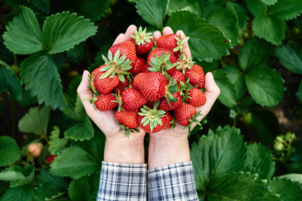
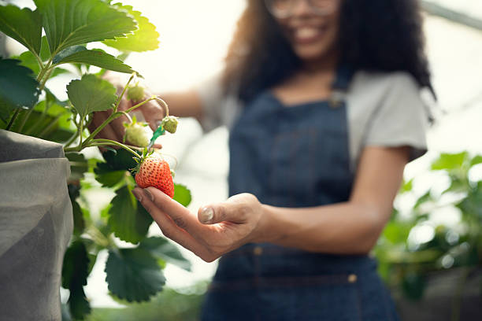
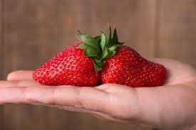
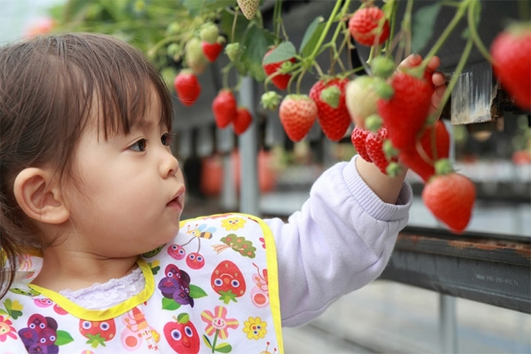
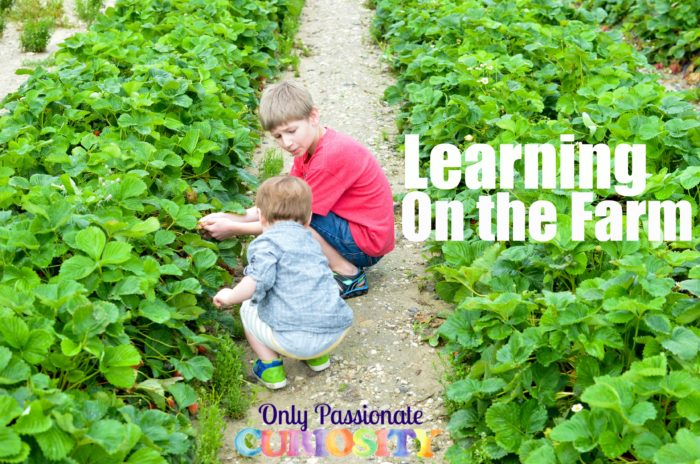

Strawberry Plucking & Activities


Farm Activities

Strawberry Picking Experience :
Guided tour with instructions on how to pick ripe strawberries.
Farm Tour :
Walk or tractor ride around the fields, explaining strawberry cultivation.
Photo Spots :
Decorated spots with props like strawberry baskets, hats, and signs for selfies.
Food & Drink Experiences

Strawberry Tasting Corner :
Fresh strawberries, jams, dried strawberries, and chocolate-dipped ones.
Cooking Workshop :
Make strawberry jam, smoothies, or shortcakes.
Strawberry Dessert Stall :
Ice cream, crepes, pancakes, and milkshakes.
Games & Fun

Strawberry Hunt Game :
Find hidden special berries (tagged ones) for small prizes.
Strawberry Quiz :
Fun facts & questions about strawberries and farming.
Kids Zone :
Painting strawberries on paper, clay modeling, or face painting with strawberry designs.
Creative & Educational

Strawberry Art Corner :
DIY crafts like decorating baskets or painting strawberry rocks.
Photography Workshop :
How to take perfect fruit and farm pictures.
Educational Session :
Learn about strawberry growth stages, pests, and harvesting.